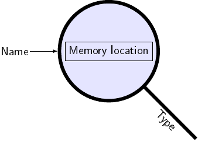

Types and Variables¶
Calculating with C++¶
Of course you can not only print text in C++, but you also have numbers at your disposal!
#include <iostram>
int main()
{
std::cout << 1 << " = " << "1" << "\n";
}
This unspectacularly prints
1 = 1
So it seems one can omit the quotes around numbers when printing. But what does that buy us? Well, in C++ everything has a type. Things between quotes have a text (string) type (regardless of the content between them), and numbers have a number type. Among other things, the type of a value determines what you can do with it: With strings like we have seen them until now, you can do little more than printing them. With numbers, however you can do a lot more, e.g. calculating:
#include <iostream>
int main()
{
std::cout << "1 + 2 = " << 1 + 2 << "\n";
std::cout << "3 - 1 = " << 3 - 1 << "\n";
std::cout << "3 - 4 = " << 3 - 4 << "\n";
std::cout << "7 * 7 = " << 7 * 7 << "\n";
std::cout << "7 * -1 = " << 7 * -1 << "\n";
std::cout << "8 / 2 = " << 8 / 2 << "\n";
std::cout << "\n";
std::cout << "8 / 3 = " << 8 / 3 << "\n";
std::cout << "8 / 3.0 = " << 8 / 3.0 << "\n";
std::cout << "\n";
std::cout << 2 * -(4 + 5 * 2 - 1 - 34) << "\n";
}
Observe the output:
1 + 2 = 3
3 - 1 = 2
3 - 4 = -1
7 * 7 = 49
7 * -1 = -7
8 / 2 = 4
8 / 3 = 2
8 / 3.0 = 2.66667
42
This program uses the four basic arithmetic operators:
+(plus) for addition,-(minus) for subtraction,*(times) for multiplication (the asterisk*resembles a times symbol \(\times\) or a multiplication dot \(\cdot\)), and/(over) for division (the forward slash/resembles a fraction bar, as in ¾ or \(\frac 3 4\)).
The syntax (the notation; the way of writing this) should look pretty familiar from mathematics: The operator is written between a left-hand side and a right-hand side operand. Such operators are called binary operators because they have two operands and infix operators because they are written between them.
The two lines containing a division are particularly interesting.
With 8 / 3 we get a rounded-down result, while with 8 / 3.0 we get the
“correct”, fractional result. The reason is that there are really two main types
of numbers in C++: integers and floating point (approximate fractional) numbers.
When you write a literal number in your code, this literal‘s type is
determined by how exactly you write it: If you include a fractional part (i.e. a
decimal point) it is a floating point number, otherwise an integer. When you
write an operator between two numbers, i.e. use an expression of the form
x operator y, where operator is a symbol like +, -, * or /,
the result will have the operands (i.e. x‘s and y‘s) type. Thus, with
8 and 3 being both integer literals, the result of dividing them is also
calculated with integer division, yielding an integer result. If the operands
have different types, the one that is more likely to correctly represent the
result is taken, and the other operand is converted to to this type before
computing the result. For floating point vs. integer, this is always floating
point which is why in the above example program writing 8 / 3.0 was enough
(but 8.0 / 3.0 would also work, of course).
The last line demonstrates that you can use arbitrarily complex expressions that
may contain multiple operators (including unary -, i.e. negation) and
parenthesis. They are evaluated like you probably know from school: + and
- are computed after * and /, the contents of parentheses are
evaluated before the containing expression and otherwise evaluation is done from
left to right.
The remainder operator %¶
There is one more operator that is often quite useful: The % operator
calculates the remainder of a division. For example, 9 % 4 is 1 because
the integer division 9 / 4 has the result 2 and 9 - 2 * 4 equals
1. 9 % 3 on the other hand, is 0 because 3 divides 9 evenly.
Mathematically, (a / b) * b + a % b (with / denoting rounded down
integer division) will always equal a. Note that the remainder operator is
often called modulo operator and pronounced as “mod”, after the mathematical
operator of the same name. It is, however, not quite the same, because C++’s
% operator has results different from the usual mathematical definition of
mod if a negative number is used. From the above equation, we can deduce that:
3 % -2is1because(3 / -2) * -2 + xequals2 + xand for this to equal3,xmust be1.-3 % 2is-1(same reasoning).-3 % -2is also-1(same reasoning again).
Since these are all different cases of operand signs, we can conclude that the
sign of a % b is the same as that of a.
Note that % only works with integers, since there is not really a remainder
when dividing floating point numbers.
The following code uses the % operator to convert minutes to minutes and
hours:
std::cout << "172 min = " << 172 / 60 << " h " << 172 % 60 << " min\n";
The output would be 172 min = 2 h 52 min.
Task
Incorporate the % operator in the above example program!
Remembering values¶
Often, it is more readable to give names to intermediate results instead of putting all in a single, complicated expression. Also, there are many situations where multiple end results are calculated based on an intermediate value. The following demonstrates how to do this, using various calculations on a circle as an example:
#include <iostream>
int main()
{
auto pi = 3.14159265359;
auto radius = 3;
auto area = radius * radius * pi; // radius * radius = radius squared
auto diameter = 2 * radius;
auto perimeter = diameter * pi;
std::cout << "r = " << radius << " ==> "
<< "d = " << diameter
<< ", A = " << area
<< ", P = " << perimeter << "\n";
}
This outputs:
r = 3 ==> A = 28.2743, P = 18.8496
The source code uses the auto keyword. This tells the compiler: “Evaluate
the expression on the right hand side of the = and save the result as the
name on the left hand side.” Afterwards, you are able to use the given name in
place of the result. Note that the expression is evaluated only once, when
defining it with auto, but not again when using it (the name refers to the
result, not to the expression). Such a named value is called variable,
and the introduction of a new variable (e.g. with the auto keyword) is
called a variable definition.
The name of a variable must start with a letter or underscore and can be followed by any number of letters, numbers or underscores (but not two or more underscores in a row). The following names are valid:
circle_radius circleRadius Html5Text MAX_INTEGER_VALUE temp i h h2 _y _1 _
While valid, names like the last ones (from temp on) should, in general,
better be avoided: The purpose of a name is to let the reader know what the
variable means, but these names tell nothing.
Important
More time is spent on reading than on writing source code. You should thus strive for the most readable source code rather than e.g. using short names just for the sake of typing speed.
These are invalid names:
42 99bottles $amount client@network first.name next-value file__content _Dummy
The last one violates a special rule: Variables may not start with an underscore followed by an uppercase letter [1].
Changing memories¶
In C++, contrary to mathematics, variables are mutable. That is, you can change
their value by assigning a new one using the assignment operator =:
#include <iostream>
int main()
{
auto price = 0; // In cent.
price = 42;
price = price + 90; // Buy ice cream.
price = price + 1399; // Buy SD-card.
price = price + 345; // Buy apples.
std::cout << "Total price: " << price / 100.0 << "\n";
}
Output:
Total price: 18.34
Note that the auto keyword is used only once here: No new variables are
introduced thereafter; it is really the value that is saved in the variable that
changes. The = is the assignment operator: It assigns the value of the
expression on its right side to its left side, which must be a variable. An
assignment like 3 = 4 + 3 or 1 * 2 = 2 will not compile (after all, what
should be the meaning of this?).
Do not mistake the meaning of the assignment operator for the mathematical
equals sign: while both use the same character, they don’t mean the same.
Mathematically, \(p = p + 90\) is a proposition that is false (at least for
real numbers), because it can be reduced to the obviously false \(0 = 90\)
by subtracting \(p\) on both sides. In C++, however, p = p + 90 is a
command that tells the computer to compute the result of the expression p +
90 and save it in the variable p.
Compound assignment¶
Since statements of the form x = x + y or generally, x = x operator
y are so common, C++ has a shorthand for them. The compound assignment
operators: x += y means the same as x = x + y, x -= y means x = x
- y and so on for *=, /= and %=. Using them, the above program
could have been written as:
#include <iostream>
int main()
{
auto price = 0; // In cent.
price = 42;
price += 90; // Buy ice cream.
price += 1399; // Buy SD-card.
price += 345; // Buy apples.
std::cout << "Total price: " << price / 100.0 << "\n";
}
More on variables¶
Before I go on with explaining the observable behavior of variables, you should
know what a variable really is: It is a named, typed area of memory. The “named”
should be clear, since we explicitly gave the variable a name (e.g. price).
The “area of memory” is needed to save the variables value. The type of a
variable determines how big this area is, which operations are allowed on
it and how they should to be performed (note that types should be nothing new to
you by now; a variables type is the very same concept as a literal’s or an
expression’s type). The type of a variable is determined at compile time (i.e.
when compiling the program, not when running it), when defining it. Unlike a
variable’s value, its type never changes. Thus in the program above, the type
of price is determined solely by the line
auto price = 0;

A variable. The type determines the interpretation of the bits stored at the memory location, and its size.
How exactly is the type determined? A variable defined using auto
automatically (hence the keyword) gets the type of the expression at the
right hand side of the =.
Note
The fact that types are determined completely at compile time and that they cannot change at runtime is what makes C++ a statically typed language. Languages like C, C#, Java and Haskell are also statically typed. Python, Ruby, Lua and Javascript on the other hand, are dynamically typed languages: In them, variables have no types, only their values have. Thus types can change at runtime, exactly like values. Dynamic typing is one of the main characteristics of the only vaguely defined term scripting language.
While dynamic typing often allows for more conscise programs (though the advantage tends to get smaller as the programs grow bigger), static typing has the advantage of improved compile-time error checking and usually better runtime performance of the compiled program.
Using this knowledge, you may now guess if the following program compiles:
#include <iostream>
int main()
{
auto x = 0;
x = x + 0.9;
std::cout << "x = " << x << "\n";
}
If you thought that it will not compile, I wish you were right. But unfortunately (if you ask me) it does compile and prints
x = 0
What’s going on here? In the first line of the main program, the compiler
determines that the literal 0 has an integer type and therefore x too
is an integer. In the next line for the addition x + 0.9, 0.9 is
determined to be a floating point literal, causing the value of x to be
converted to a floating point value (i.e. temporary memory is reserved and a
floating point representation of x‘s value is saved there. x itself is
unchanged). Then a floating point addition is performed which results in the
floating point value 0.9. But here is the problem: the assignment has an
integer type at its left hand side, and a type, once determined, will never be
changed. What C++ does instead, is converting the right hand side’s value into
the type of the variable, in this case in an integer. This causes the floating
point value to be rounded down, resulting in the value 0, which is then
printed in the next line. If you use the warning options I told you while compiling, your compiler should tell you that
there is a problem here. Microsoft’s compiler, for example, emits this waning:
warning C4244: '=' : conversion from 'double' to 'int', possible loss of data
Important
Always enable your compiler’s warning messages!
You will probably wonder why it says “double” and “int” instead of something like “floating point number” and “integer”. The next section should explain this.
Primitive number types¶
Until now, I have always talked about “floating point numbers” and “integers”. I have also said that these are the main types of numbers. The truth is that these were just categories of types:
Floating point numbers¶
For floating point numbers, C++ has the float, double types. The
difference between them is their precision and the minimum/maximum values they
can contain. As the name implies, a double usually occupies twice as much
bytes as a float and thus has a higher precision and a greater range of
representable numbers. There is also long double which can have an even
greater range and precision (and size), but it is used very seldom and with
Microsoft’s compiler it is the same as double. By default, if you write a
number with a fractional part, like 1.2 or 1.0 [2] it is
a double. If you want the literal to have the type float, append a
f or F. So while 1.0 is of type double, 1.0f is a float. The
same goes for long double only with l or L instead of f or
F. I recommend using the uppercase variant here, because lowercase l
looks very similar to 1 (compare 1.1l and 1.1L). I recommend to
always use double for floating point numbers, unless you have specific
reasons not to.
Integer numbers¶
Unlike floating point numbers, which are approximations, integers are, as you have probably expected, exact within their supported range.
Integer number can be further categorized in signed and unsigned
integers. The formers can represent negative numbers, while the latters cannot,
but instead can represent twice as large positive numbers. By default, integers
are signed. You can add the suffix u or U after a literal to make it
unsigned, e.g. 512u or 512U. The integer types differ in the supported
range and the number of bytes they occupy. From smallest to largest, there are:
short int, or justshort, typically 16 bit long, allowing numbers from \(-2^{16 - 1} = -32768\) to \(2^{16 - 1} - 1 = 32767\) in their signed variant and from \(0\) to \(2^{16} = 65536\) in their unsigned variantint, typically 32 bit long, allowing numbers from -2,147,483,648 to 2,147,483,647long int, or justlong, typically 32 or 64 bit longlong long int, or justlong long, typically 64 bit long, allowing absolute numbers as big as circa \(9.2 \cdot 10^{18}\) (that is, a number with 19 decimal digits).
Important
If you are unfamiliar with binary numbers and the mathematics behind positional notation in general, I recommend you do some research on this topic.
I said “typically” for the sizes and valid ranges because this is one of the
things that are implementation defined, i.e. the C++ Standard does not say how
large the types are; it only guarantees that int is at least as large as
short, long is at least as large as int and long long at least
as large as long. Additionally, it says that the smallest integer type must
be at least 1 byte long and that one byte must have at least 8 bit [4].
And lastly, the standard mandates (and that is actually the general definition
of “implementation defined”) that all compilers document how large the types
are, and which ranges they support. For example, the documentation for MSVC is
at http://msdn.microsoft.com/en-us/library/s3f49ktz.aspx.
For each of these types, an unsigned variant exists, that has the same type name
as the signed type above, but with unsigned prepended, e.g. unsigned
long. The type unsigned int can also be called just unsigned.
The type of a literal is never short but otherwise it is the smallest of the
above types that can hold the value. You can use the l or L suffix to
force using at least long (e.g. 42L) and ll or LL to force a
long long (all also in addition to u or U, e.g. 42uL or
42LLu).
Characters¶
The char type can hold a single one byte character, or a one byte integer
number.
Because computers can only handle numbers, characters must be encoded as such. The mapping between a character (like “a”) and a number (like 65) is called the character encoding. There are many of them but all that are widely used today are based on ASCII. While different encodings are able to encode different characters (for example there are encodings for Cyrillic characters and other ones that include extended Latin characters like Á, ü, ß or ï) almost all encodings can represent the ASCII characters. They are:
- The digits
0to9(digit symbols are not the same as real numeric values, although they are used to represent them) - The uppercase letters
AtoZ - The lowercase letters
atoz - Punctuation characters:
!?.:,; - Brackets:
([{}]) - Other symbols:
"#$%&'*+/<=>@\^_`|~ - Control characters like line break, tabulator or form feed (page break).
So since characters and numbers are stored exactly the same way, it is up to you
how you interpret the char type: C++ let’s you use all the arithmetic
operators like + and % on chars but std::cout prints them as
characters. Also, the char literals are written as 'x' where
x can be any (single) ASCII character or escape sequence like \n.
Compilers might also accept other characters but the C++ standard does not
require them to, so you should restrict yourself to ASCII if you want your
source code to be portable across different compilers.
If you use char for integers, be aware that it is implementation defined
whether they are signed or unsigned, so you should better explicitly
use signed char (for numbers from -128 to 127) or unsigned char (for
numbers from 0 to 255), depending on your needs. Note that signed char and
unsigned char are always both their own types, different from plain
char, unlike the other integer types for which e.g. signed int is just
another name for int.
As an example of char used as character, the following is an inconvenient
way to print “Hello!”:
std::cout << 'H' << 'e' << 'l' << 'l' << 'o' << '!' << '\n';
Explicitly typed variables¶
Instead of using auto, you can also explicitly give a variable a type. You
do this, simply by writing the type instead of auto. The expression on the
right side of the = will be converted, if necessary. For example, our circle
program could be written as:
#include <iostream>
int main()
{
double pi = 3.14159265359;
int radius = 3;
double area = radius * radius * pi; // radius * radius = radius squared
double diameter = 2 * radius;
double perimeter = diameter * pi;
std::cout << "r = " << radius << " ==> "
<< "d = " << diameter
<< ", A = " << area
<< ", P = " << perimeter << "\n";
}
I have chosen the types in such a way that no conversion occurs, but you could
also use e.g. double for the radius’ type, or use float everywhere.
For variables with explicit types, you do not have to give an initial value.
E.g. the following line is valid C++ and defines the variable sum of type
usigned:
unsigned sum;
You can later assign a value to it using =:
sum = 1 + 2 + 3 + 4;
However, it is usually a good idea to always initialize variables when
defining them, as reading from an uninitialized variable (e.g. by printing it
with std::cout or by using its value in an expression) is undefined
behavior. That’s the C++ standard’s way of saying that if you do this, your
program might compile but might do anything when run: It can crash your computer
or, as the saying goes, reformat your hard drive or make demons fly out of your
nose. The latter two are a bit unlikely, but in fact there are really strange
things that can happen when you have undefined behavior in your program. For
uninitialized variables, you will most likely just get some garbage value
(whatever bits previously were in the memory area that is now occupied by the
variable).
Note
To clear up the terminology here:
- You initialize a variable when you assign a value in the same statement where it is defined.
- You assign a variable by using the
=operator afterwards. - A variable is initialized both if you have assigned a value to it or really did initialize it. Otherwise it is uninitialized.
Nevertheless, variables can be “assigned” in other ways than using the
assignment operator =, and leaving out the initial value can be used as a
sign to the reader that such an assignment is intended. The most prominent
example for this is user input.
You may now ask when you should use explicitly typed variables vs. auto. I
recommend to use explicitly typed variables only when you want a conversion, or
when you dont’t initialize the variable with the = operator. If you want to
know more, I recommend reading this blog post by the prominent C++ expert Herb
Sutter: http://herbsutter.com/2013/08/12/gotw-94-solution-aaa-style-almost-always-auto/.
You may want to do this later, when you know more of C++, as this blog post is
intended for developers who already know the language.
Defining multiple variables at once¶
You can define multiple variables at once. Using explicitly typed variables this is really straightforward:
int x, y;
declares the variables x and y of type int without initializing
them. It means the same as
int x;
int y;
You can, however also initialize these variables, or initialize only some of them:
int x = 0, y;
initializes x to 0 but leaves y uninitialized.
This syntax can also be used with auto. As usual, all variables declared
must be initialized:
auto x = 0, y = 0;
works, but
auto x = 0, y;
doesn’t, for the same reason that the equivalent
auto x = 0;
auto y;
doesn’t work.
However, there is an additional catch with auto: All variables declared in
the same statement must have the same type. That is, while
auto x = 0, y = 0;
works because both x and y are deduced to be ints, the following
is an error, because different types are deduced for a and b:
auto a = 0, b = 0.0;
You can remember this by imagining that the compiler replaces auto with the
type name and does not allow conversions there.
User input¶
So far, our programs produced output but took no input from the user. For example, if you wanted to calculate the area of a circle with a different value, you would have to change the source code and recompile the program. That’s not acceptable! Let’s solve this problem:
#include <iostream>
int main()
{
auto pi = 3.14159265359;
double radius;
std::cout << "Enter the circle's radius: ";
std::cin >> radius;
auto area = radius * radius * pi; // radius * radius = radius squared
auto diameter = 2 * radius;
auto perimeter = diameter * pi;
std::cout << "r = " << radius << " ==> "
<< "d = " << diameter
<< ", A = " << area
<< ", P = " << perimeter << "\n";
}
If you compile and run this program, it will first display the text “Enter the
circle’s radius: ”. Then you can enter a floating point number (similarly to how
you would write it in source code, but of course, no type suffixes are
supported). std::cin will then examine the string you entered, and calculate
number of the given variable’s type from it and stores the result there [3].
Note
All types are fixed at compile time.
When you run the program and enter a value, there is no way to influence the
type; whatever you enter will be interpreted according to the type of the
variable passed to std::cin. Thus, the following does not work:
auto radius;
std::cin >> radius;
std::cin must know how to interpret the input string at compile time, and
the compiler must know at compile time what type radius has (e.g. for
knowing how much memory is needed for it or where to insert instructions for
conversions, etc.). In fact, not even the following works:
auto radius;
radius = 0.0;
Variables defined using auto must always be initialized, i.e. assigned
directly in the definition statement.
The program then goes on, as in the previous version, calculating the diameter, perimeter and area of the circle with the entered radius and printing them.
An example session looks like this:
Enter the circle's radius: 2.3
r = 2.3 ==> d = 4.6, A = 16.619, P = 14.4513
Note that you have to end your input (2.3 in the example above) by pressing
Return on your keyboard.
Note
char variables are always interpreted as characters by
std::cin, meaning that only a single character can be read. Thus,
entering 32 for std::cin >> c (where c is a char) causes c to
become the character '3' not the character whose encoded value is 32. The
2 will be left in the input stream and retrieved when std::cin is
used the next time.
Constants¶
Variables are mutable, but sometimes you don’t want a value to change, e.g for
natural constants like \(\pi\) (pi). C++ supports this with the const
keyword: By writing it before auto or the type name, the variable is defined
to be constant. Such a constant must always be directly initialized at the point
of definition, like auto variables, even when it is explicitly typed.
In our circle program we could use const everywhere except for the input
variable radius:
#include <iostream>
int main()
{
const auto pi = 3.14159265359;
double radius;
std::cout << "Enter the circle's radius: ";
std::cin >> radius;
const auto area = radius * radius * pi; // radius * radius = radius squared
const auto diameter = 2 * radius;
const auto perimeter = diameter * pi;
std::cout << "r = " << radius << " ==> "
<< "d = " << diameter
<< ", A = " << area
<< ", P = " << perimeter << "\n";
}
I recommend using const variables anywhere you can, but others like to use
it only for these variables that are logically immutable, e.g. natural constants
like pi. Do whatever you think is more readable.
In the price calculation program, const could not be used, since we are
changing the only variable price.
You should almost always use constants instead of writing numeric literals
directly in your code: We have seen that for pi, but this applies to almost
any number (other than 0 and 1 which often have no special meaning beyond being
zero and one). Numeric literals used for other things than initializing a
constant are thus often called magic numbers because their meaning is
unknown to the uninitiated reader.
Background information: Temporary variables¶
In the introduction’s chapter Programming languages, I explained that C++ is compiled into CPU instructions. I also said that such instructions are very primitive. Consider for example the following line of C++:
auto x = y * (1 - p * p) + z;
Clearly, there is no single CPU instruction that can do this whole calculation. In fact, all CPU instructions for calculations take only two operands. The C++ compiler will thus translate the code in the equivalent of the following (the names are just for demonstration purposes):
auto __t1 = p * p;
auto __t2 = 1 - t1;
auto __t3 = y * t2;
auto x = t3 + z;
That is, the intermediate results of the calculations are saved in invisible, temporary variables.
Note
This is just conceptually so. When there is no observable difference
in the program’s behavior, the compiler can always do something different.
E.g. in the above code it will probably detect that no temporaries are
necessary, since the calculation’s intermediate values can be accumulated in
x:
auto x = p * p;
x = 1 - x;
x = y * x;
x = x + z;
An other way to look at this is realizing that the difference between a (sub)expression’s value and a variable’s is only that the former has no name. It does, however, have the two other characteristics of a variable: it’s stored in a certain area of memory and has a type. A typed area of memory is called an object. A variable can thus also be described as a named object.
Summary¶
- Literals are values that are literally written into the source code, like
42,3.14, or"Hello". - The operators
+,-,*and/can be used to add, subtract, multiply and divide two numeric operands. x % ycalculates the remainder when dividing the integersxbyy. The result has the same sign asx.- Variables are named, typed, mutable areas of memory.
- Variable names must start with a letter or underscore and can then be followed by any number of letters, digits and/or underscores.
- Complex expressions can be built by combining literals and variables using operators and parentheses.
- Everything has a type: Literals, variables, expressions and subexpressions
(like the
3 * 4in2 + 3 * 4). - Types are fixed at compile time.
- A literal’s type can be influenced by appending a suffix (e.g.
1.0f). - For numbers, there are floating point and signed and unsigned integer types of varying precision and supported range.
- The
chartype can represent characters or one byte integers. - A variable’s type can be deduced automatically by the compiler from the
initialization expression by using the
autokeyword. - A variable’s type can be defined explicitly by writing a type name instead of
auto, butautoshould usually be preferred. - Using an uninitialized variable’s value is a dangerous error that is not detected by the compiler.
- A variable’s value can be set from user input by using
std::cinlikestd::cin >> var. constcan be prepended to a variable’s type name or toautoto define a constant that cannot be changed.
Your knowledge of C++ is now sufficient for developing programs that replace e.g. simple spreadsheet documents.
Footnotes
| [1] | In fact, such names are not actually invalid but they are reserved for the implementation, that is the compiler and the standard library. The same applies to names containing multiple underscores in a row. |
| [2] | You can leave out the 0 after the ., i.e. 1.
means the same as 1.0. |
| [3] | We will cover what happens when you enter an invalid value later; for now, just enter something correct. |
| [4] | Yes, there are/were exotic platforms were a byte does not have 8 bit. |